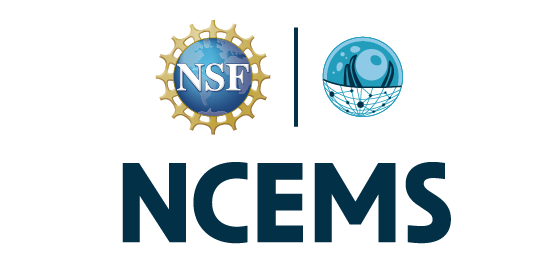
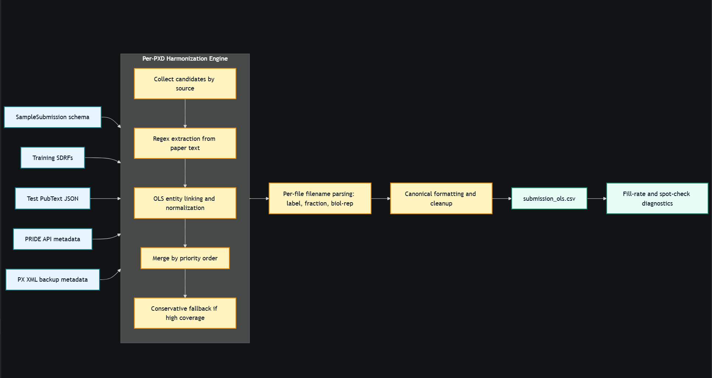
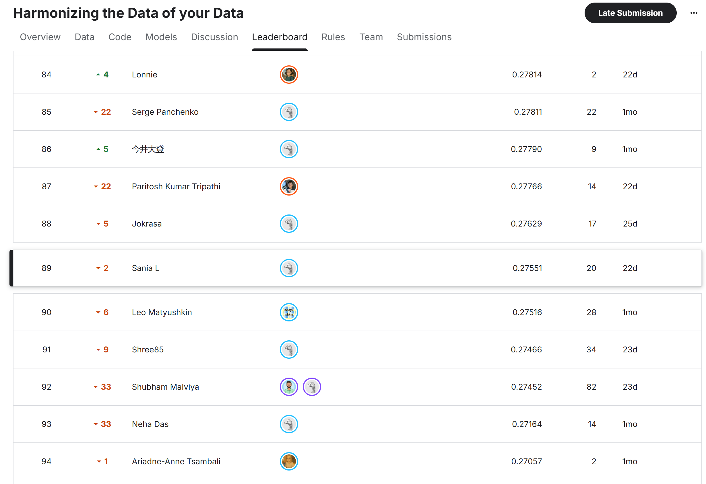

Harmonizing the Data of Your Data
Built an end-to-end NLP pipeline for the Kaggle proteomics metadata extraction challenge, turning unstructured scientific papers into machine-readable SDRF annotations. The system combines domain metadata retrieval, transformer-based entity detection, and ontology linking to recover experimental context at scale.
Project Snapshot

Screenshots


Leaderboard Snapshot
Problem Statement
The Problem
Scientific articles describe experimental context in prose, not in a format that downstream systems can reliably query. In proteomics, that missing structure blocks reuse because datasets need Sample and Data Relationship Format (SDRF) annotations to encode samples, treatments, instruments, and analysis conditions.
The Kaggle challenge asked competitors to read publications and reconstruct those SDRF fields automatically. That means recovering the right entities from dense domain text while staying consistent with the exact submission schema used for leaderboard scoring.
Pipeline
The Pipeline
Notebook 16 is built around a hierarchy of trust, each stage only runs if the previous one could not confidently fill a column. When a test paper came in, the pipeline worked in this order:
- Training SDRF overlap - ground truth values from the competition's own training set take absolute priority.
- PRIDE API -> OLS normalization - authoritative biological metadata fetched directly from PRIDE, normalized against the Ontology Lookup Service. An LRU cache ensures each term is only queried once.
- PX XML backup -> OLS normalized - when PRIDE API returned nothing, the project's XML title and description were used as a fallback source.
- Regex extraction -> OLS normalized - pattern matching for tissues and instruments when structured sources failed.
- Filename parsing - raw mass spec filenames often encode methodology directly (instrument settings, fractionation, sample IDs). For the 5 test PXDs with no paper text, this was sometimes the only signal available.
- Conservative majority fallback - only triggered when a value appeared in >80% of files for a given experiment, and excluded experiment-specific columns where majority logic does not apply.
What Didn't Work
What Didn't Work
The highest-scoring notebook was not the most sophisticated, it was the one that stopped trying to be clever and deferred to authoritative sources instead.
Early iterations used hand-coded ontology dictionaries to normalize extracted values. Notebook 11 represented the most complete version of this approach, exhaustive lookup tables mapping tissue names, instruments, and reagents to their SDRF canonical strings across 65 tissue entries, 30 instrument entries, and 26 cleavage agent synonyms. It scored reasonably well, but every normalization decision was a manual guess about what the competition expected. The dictionary could not handle format variants automatically, "Blood Serum", "blood serum", and "EDTA plasma" all needed to resolve to the same UBERON node (NT=blood serum;AC=UBERON:0001977), and any miss scored zero for that column.
The middle notebooks introduced PubMedBERT for entity extraction, expecting a transformer trained on biomedical text to outperform regex. It did not. BERT consistently overwrote values that the PRIDE API had already gotten right, replacing authoritative metadata with confident wrong guesses. A model that does not know what it does not know is worse than no model at all in a schema-strict scoring environment.
Notebook 16 dropped BERT entirely and replaced the static dictionaries with live OLS4 API queries, asking EBI's actual ontology lookup service to resolve terms at runtime. Since the competition scoring was built on the same ontologies OLS serves, alignment improved immediately. The pipeline stopped generating answers and started retrieving them.
One thing I'd do differently from the start: study prior winning solutions earlier. The Coleridge Initiative competition tackled similar scientific entity extraction problems, those pipelines would have pointed toward authoritative source alignment weeks before I found it through trial and error.
Evaluation
How It Was Measured
The leaderboard did not reward exact row-by-row reconstruction. Instead, scores were computed as a macro-averaged F1 over unique annotation values for each publication and SDRF column, after clustering near-matching strings by similarity. That made recall, normalization, and false-positive control all matter.
- Grouped predictions by publication ID and metadata column before comparison.
- Harmonized close text variants with similarity-based clustering to tolerate minor wording differences.
- Used the repository scorer locally to inspect per-column metrics and refine extraction quality.
What I Learned
What I Learned
Competitive NLP on scientific documents is less a modeling problem than a normalization problem. The biggest leaderboard gains came not from better extraction but from better alignment, making sure predicted values matched the exact ontology strings the scoring function expected.
When domain APIs provide ground truth, the pipeline should treat them as locks, not suggestions. The costliest mistake was letting a model overwrite values that an authoritative source had already gotten right.
Finally: benchmark against prior art before building. The solution space for scientific entity extraction already existed, I just found it too late.
Sponsors
 NSF National Center for the Emergence of Molecular and Cellular Sciences
NSF National Center for the Emergence of Molecular and Cellular Sciences
.png?generation=1769823718725550&alt=media) Penn State Institute for Computational and Data Sciences
Penn State Institute for Computational and Data Sciences